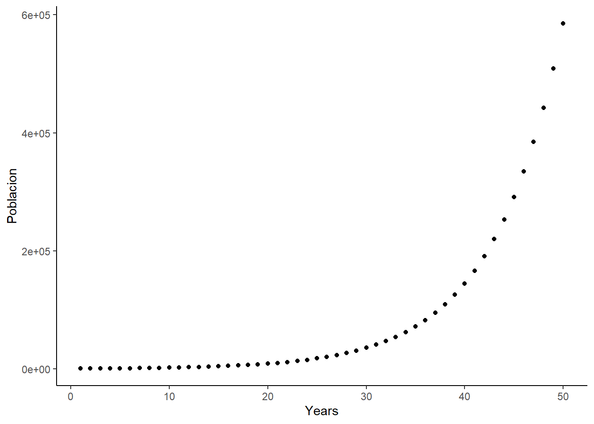

calcular_poblacion <- function(Nt, B, D, I, E) {
Nt2 = Nt + B - D + I - E
return(Nt2)
}
# Uso de la función
Nt = 1000
B = 50
D = 30
I = 10
E = 15
calcular_poblacion(Nt, B, D, I, E)[1] 1015La segunda sesión estará más orientada a la teoría que a la práctica, abordando conceptos clave utilizados en Ecología.
Para esta clase nos basaremos en: Applied Population Ecology Principles and Computer Exercises using RAMAS EcoLab Second Edition
El número total de individuos (N) en una región espacial establecida solo puede cambiar debido a nacimientos, muertes, inmigración o emigración. Las variaciones en el tamaño de la población durante un intervalo discreto de tiempo, de t a t+1, pueden describirse mediante la siguiente ecuación:
\[N(t+1) = N(t) + B - D + I - E\]
calcular_poblacion <- function(Nt, B, D, I, E) {
Nt2 = Nt + B - D + I - E
return(Nt2)
}
# Uso de la función
Nt = 1000
B = 50
D = 30
I = 10
E = 15
calcular_poblacion(Nt, B, D, I, E)[1] 1015Numerosas poblaciones son cerradas, lo que implica que no hay inmigración ni emigración. En tales casos, el modelo para la población es:
\[N(t+1) = N(t) + B - D\]
calcular_poblacion <- function(Nt, B, D) {
Nt2 = Nt + B - D
return(Nt2)
}
# Uso de la función
Nt = 2000
B = 200
D = 300
calcular_poblacion(Nt, B, D)[1] 1900En el caso de una especie anual, todos los adultos viven en el año t, mueren antes del año t + 1. Por lo tanto, el número de individuos en la población al año siguiente es igual al número de la población de este año, multiplicado por el promedio del número de descendientes por individuo.
\[N(t+1) = N(t)f\]
calcular_poblacion <- function(Nt, f) {
Nt2 = Nt * f
return(Nt2)
}
# Uso de la función
Nt = 2000
f = 1.2
calcular_poblacion(Nt, f)[1] 2400En el caso de una especie anual, la tasa de fecundidad es equivalente a la tasa de crecimiento de la población.
\[N(t+1) = N(t)R\]
calcular_poblacion <- function(Nt, R) {
Nt2 = Nt * R
return(Nt2)
}
# Uso de la función
Nt = 2000
R = 1.2
calcular_poblacion(Nt, R)[1] 2400R = 0.8
calcular_poblacion(Nt, R)[1] 1600Si deseamos predecir el tamaño de la población en el tiempo t en el futuro próximo, a partir del tiempo 0, la ecuación para el crecimiento de la población puede expresarse de la siguiente manera:
\[N(t) = N(0)R^t\]
calcular_poblacion <- function(Nt, R, t) {
Nt2 = Nt * R^t
return(Nt2)
}
# Uso de la función
Nt = 2000
R = 1.2
t = 5
calcular_poblacion(Nt, R, t)[1] 4976.64R = 0.8
calcular_poblacion(Nt, R, t)[1] 655.36Utilizando la equacion \[N(t) = N(0)R^t\] grafique el tamaño de la población para una especie x. La población inicial se estableció en 540 individuos, la tasa de crecimiento es de 1.15, y la observación se extendió a lo largo de 50 años.
Nt = 540
R = 1.15
t= 50
Poblacion <- calcular_poblacion(Nt = 540, R= 1.15, t = c(1:50))
Years <- 1:50
Datos <- data.frame(Years = Years,
Poblacion = Poblacion)
library(tidyverse)── Attaching core tidyverse packages ──────────────────────── tidyverse 2.0.0 ──
✔ dplyr 1.1.3 ✔ readr 2.1.4
✔ forcats 1.0.0 ✔ stringr 1.5.0
✔ ggplot2 3.4.3 ✔ tibble 3.2.1
✔ lubridate 1.9.3 ✔ tidyr 1.3.0
✔ purrr 1.0.2
── Conflicts ────────────────────────────────────────── tidyverse_conflicts() ──
✖ dplyr::filter() masks stats::filter()
✖ dplyr::lag() masks stats::lag()
ℹ Use the conflicted package (<http://conflicted.r-lib.org/>) to force all conflicts to become errorsggplot(data= Datos, aes(x= Years, y= Poblacion))+
geom_point() +
theme_classic()